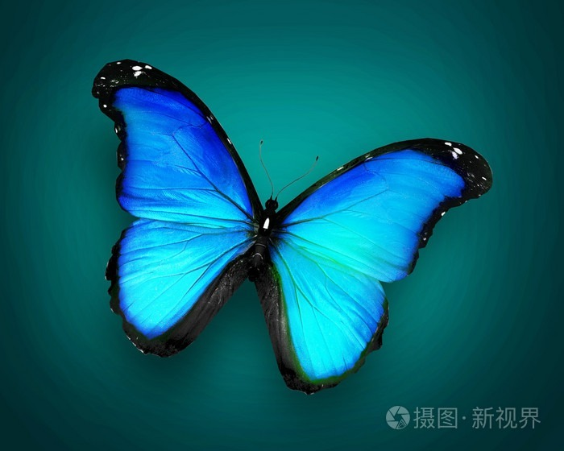

I blend traditional techniques with digital innovation to tell compelling visual stories.
I focus on creating a unique artistic design style. My passion for art and culture has always been the driving force behind my pursuit of innovation.
As an illustrator, I excel at blending quality with creativity, weaving intricate details and storytelling into my illustrations.
My goal is to transform creativity and life into captivating artworks.
Create a Dot Density Map of Places I've Visited